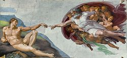
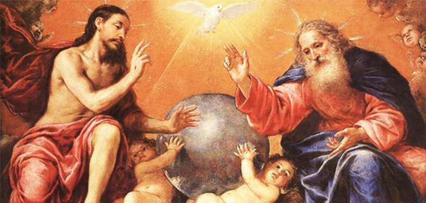
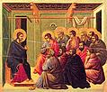
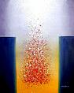

Penciptaan Manusia

Allah menciptakan mansuia menurut gambar-Nya, memberikan martabat
dan tanggung jawab.
Ayat Alkitab: Kejadian 1;26-27 : "Berfirmanlah Allah:
'Baiklah kita menjadikan manusia menurut gambar dan rupa kita...'"
Peran Manusia dalam rencana Allah
Manusia memilki peran penting dalam melaksanakan rencana Allah di
Bumi.
Ayat Alkitab: Efesus 2;10 : "Sebab kita ini buatan-Nya,
diciptakan dalam Kristus Yesus untuk melakukan pekerjaan baik, yang
dipersiapkan Allah sebelumnya supaya kita hidup di dalamnnya."
Kemuliaan dan Kehancuran Manusia
Kisah adam dan Hawa menunjukan kemuliaan manusia, sementara kisah
Nuh menggambarkan kehancuran akibat dosa.
Ayat Alkitab: Kejadian 3;6 : "ketika perempuan itu melihat
bahwa buah pohon itu baik untuk dimakan dan enak dipandang mata, dan
pohon itu menarik hati untuk dibuatnya bijak, maka diambilnyalah
dari buah itu dan dimakannya."
Pesan Kasih Allah

kasih Allah tercermin dalam pemberian Yesus Kristus untuk menebus
dosa manusia.
Ayat Alkitab: Yohanes 3;16 : "Karena begitu besar kasih Allah
akan di dunia ini, sehingga ia telah mengaruniakanm Anak-Nya yang
tunggal, supaya setiap orang yang percaya keapda-Nya tidak binasa,
melainkan beroleh hidup yang kekal."
Manusia sebagai tempat Roh Kudus
Mansuia dianggap sebagai tempat tinggal Roh Kudus, memerlukan hidup
yang kudus.
Ayat Alkitab: 1 korintus 6;19 : "Atau tidak tahukah kamu
bahwa tubuhmu adalah bait Roh Kudus yang diam di dalam kamu, Roh
yang kamu peroleh dari Allah, dan Bahwa kamu bukan milikmu sendiri?"
Hak Asasi Manusia dalam perspektif Alkitab
Alkitab mengajarkan martabat Manusia sebagai gambar Allah.
Ayat Alkitab: Kejadian 9; 6 :"Barangsiapa menumpahkan darah
Manusia, oleh manusia itu sendirilah darahnya akan ditumpahkan;
sebab Allah menciptakan manusia menurut gambar-Nya."
Panggilan dan Tujuan Hidup
Setiap manusia memiliki panggilan dan tujuan unik dalam hidupnya.
Ayat Alkitab: 2 Timotius 1;9 : "Allah, yang telah
menyelamatkan kita dan memanggil kita dengan panggilan kudus-Nya,
bukan karena perbuatan kita sendiri, tetapi karena maksud dan kasih
karunia-Nya."
Kehidupan setelah Kematian

Alkitab mengajarkan tentang kehidupan abadi dan pertemuan dengan
Allah.
Ayat Alkitab: Yohanes 14;2-3 : "Di rumah Bapa-Ku banyak
tempat tinggal. Jika tidak demikian, tentu aku mengatakannya
kepadamu. Sebab Aku Pergi untuk menyediakan tempat bagimu."
Manusia dalam kisah-kisah Perjanjian Baru dan Lama
Kisah-kisah tokoh-tokoh seperti Abraham, Musa, Daud, dan Rasul-Rasul
menunjukkan perjalanan iman manusia.
Ayat Alkitab: Ibrani 11;1 :"Iman adalah dasar dari pada
pengharapan, suatu bukti dari pada barang yang belum kelihatan."
Keselamatan Dan Anugerah

Keselamatan datang melalui iman dan anugerah Allah.
Ayat Alkitab: Efesus 2;8-9 : "Sebab oleh kasih karunia kamu
diselamatkan karena iman, itu bukan kasil usahamu, tetapi pemberian
Allah; BUkan hasil pekerjaan supaya jangan seorangpun bermegah."